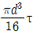
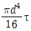
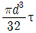
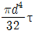
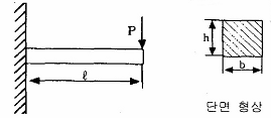
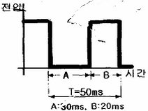
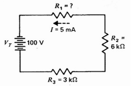

자동차정비산업기사 (2012-03-04 기출문제)
1과목: 일반기계공학
1. 안전계수과 프와송 비를 나타낸 식으로 가장 옳게 짝지어진 것은?
- 안전계수 = 허용응력 / 인장강도
프와송 비 = 세로 변형률 / 가로 변형률 - 안전계수 = 허용응력 / 인장강도
프와송 비 = 가로 변형률 / 세로 변형률 - 안전계수 = 인장강도 / 허용응력
프와송 비 = 세로 변형률 / 가로 변형률 - 안전계수 = 인장강도 / 허용응력
프와송 비 = 가로 변형률 / 세로 변형률
(정답률: 64%)

2. 플렉시블 커플링의 설명으로 틀린 것은?
- 어느 정도의 진동은 흡수할 수 있다.
- 두 축의 수축과 팽창이 일어날 때 원활하게 전동하기 위하여 적용한다.
- 두 축이 어느 정도의 각도(15°~ 30°)로 교차할 때 사용한다.
- 양측의 중심선이 정확히 일치하기 곤란한 곳에 사용한다.
(정답률: 66%)
3. 주형을 만드는데 사용하는 주물사 구비조건이 아닌 것은?
- 가스 및 공기가 잘 빠지지 않을 것
- 반복 사용에 따른 형상 변화가 거의 없을 것
- 내열성이 크고 화학적인 변화가 생기지 않을 것
- 주형 제작이 용이하고 쇳물의 압력에 견딜수 있는 강도를 갖출 것
(정답률: 82%)
4. 보 속의 굽힘 응력에 대한 설명으로 옳은 것은?
- 중립면으로부터의 거리에 비례한다.
- 중립면에서 굽힘응력이 최대로 된다.
- 세로탄성계수에 반비례한다.
- 굽힘 곡률반지름에 비례한다.
(정답률: 53%)
5. 리드가 36mm인 3줄 나사가 있다. 이 나사의 피치는 몇 mm인가?
- 3
- 12
- 24
- 108
(정답률: 81%)
6. 다음 재료 중 소성가공이 가장 어려운 것은?
- 저탄소강
- 구리
- 알루미늄
- 주철
(정답률: 69%)
7. 지름이 d인 원형 단면의 허용비틀림응력을 τ 라 할 때, 이 봉이 받는 허용비틀림모멘트는 다음 중 어느 것인가?




(정답률: 49%)
8. 비중이 2.7인 이 금속은 합금원소를 첨가하여 높은 강도, 가벼운 무게와 내부식성이 강한 합금으로 개선하여 자동차 트랜스미션 케이스, 피스톤, 엔진블록 등으로 사용되는 것은?
- 납
- 아연
- 마그네슘
- 알루미늄
(정답률: 83%)
9. 탭 가공에서 탭의 파손원인으로 거리가 먼 것은?
- 막힌 구멍의 밑바닥에 탭 선단이 닿았을 경우
- 탭이 경사지게 들어간 경우
- 너무 무리하게 힘을 가했을 경우
- 구멍이 너무 클 경우
(정답률: 81%)
10. 구리, 주석, 흑연의 분말을 혼합하여 성형을 한 후 가열하고, 윤활제를 첨가하여 소결한 것으로 주유가곤란한 부분의 베어링으로 사용하는 것은?
- 포금(gun metal)
- 인청동(phosphor bronze)
- 켈밋(kelmet)
- 오일라이트(oilite)
(정답률: 70%)
11. 베어링 재료에 요구되는 성질로 거리가 먼 것은?
- 하중 및 피로에 대한 충분한 강도를 가져야 한다.
- 마찰계수가 크고 녹아 붙지 않아야 한다.
- 열전도율이 크고 내마모성이 커야 한다.
- 내식성이 크고 유막의 형성이 용이해야 한다.
(정답률: 56%)
12. 공작물을 단면적 100cm2 인 유압실린더로 1분에 2m의 속도로 이송시키기 위해 필요한 유량은 몇 L/min인가?
- 10
- 20
- 30
- 40
(정답률: 67%)
13. 유압모터로 어떤 물체를 300Nㆍm 의 토크로 분당 1000회전시키려고 한다. 이 때 모터에 필요한 동력은 몇 kW인가? (단, 효율은 100%이다.)
- 31.4
- 41.9
- 314
- 419
(정답률: 47%)
14. 그림과 같이 직사각형 단면(b x h)을 갖는 외팔보의 끝단부 처짐량에 대한 설명 중 맞는 것은?(오류 신고가 접수된 문제입니다. 반드시 정답과 해설을 확인하시기 바랍니다.)

- 처짐량은 보의 길이의 제곱(ℓ2)에 비례한다.
- 처짐량은 보 높이의 세제곱(h3)에 반비례한다.
- 처짐량은 하중(P)에 반비례한다.
- 처짐량은 보의 너비(b)에 반비례한다.
(정답률: 56%)
15. 다음 감아걸기 전동장치에서 축간거리를 가장 멀리 할 수 있는 것은?
- 로프 전동장치
- 타이밍 벨트 전동장치
- V-벨트 전동장치
- 체인 전동장치
(정답률: 69%)
16. 볼 베어링의 구조에서 전동체의 원둘레에 고르게 배치하여 전동체가 몰리지 않고 일정한 간격을 유지할 수 있게 하며, 서로 접촉을 피하고 마모와 소음을 방지하는 역할을 하는 것은?
- 리테이너(retainer)
- 스트레이너(strainer)
- 패킹(packing)
- 실(seal)
(정답률: 65%)
17. 비금속재료 중 하나인 합성수지의 일반적인 특징에 해당하지 않는 것은?
- 가공성이 크고 성형이 간단하다.
- 전기 전도성이 좋다.
- 열에 약하다.
- 투명한 것이 많고 착색이 자유롭다.
(정답률: 77%)
18. 용융용접의 일종으로서 아크열이 아닌 와이어와 용융슬래그 속에서 전극 와이어를 연속적으로 공급하여 통전된 전류의 저항열을 이용하여 용접을 하는 것은?
- 이산화탄소 아크 용접
- 테르밋 용접
- 불활성 가스 아크 용접
- 일렉트로 슬래그 용접
(정답률: 66%)
19. 체인 전동장치의 일반적인 특징에 해당하지 않는 것은?
- 미끄럼이 없는 일정한 속도비를 얻을 수 있다.
- 전동 효율이 우수한 편이다.
- 체인 길이의 신축이 가능하고, 다축 전동이 용이하다.
- 고속 회전에 적합하다.
(정답률: 67%)
20. 버니어캘리퍼스에서 어미자의 1눈금이 0.5mm이고, 아들자는 12mm을 25등분하였다면 최소 측정값은?
- 0.01mm
- 0.02mm
- 0.⑤mm
- 0.10mm
(정답률: 70%)
2과목: 자동차엔진
21. 자동차용 LPG의 장점이 아닌 것은?
- 대기 오염이 적고 위생적이다.
- 엔진 소음이 정숙하다.
- 증기폐쇄(vapor lock)가 잘 일어난다.
- 이론 공연비에 가까운 값에서 완전 연소한다.
(정답률: 81%)
22. 왕복 피스톤 기관의 속도에 대한 설명으로 가장 옳은 것은?
- 피스톤의 이동속도는 상사점에서 가장 빠르다.
- 피스톤의 이동 속도는 하사점에서 가장 빠르다.
- 피스톤의 이동 속도는 BTDC 90°부근에서 가장 빠르다.
- 피스톤의 이동 속도는 ATDC 10°부근에서 가장 빠르다.
(정답률: 60%)
23. 크랭크축 메인베어링 저널의 오일간극 측정에 가장 적합한 것은?
- 필러 게이지를 이용하는 방법
- 플라스틱 게이지를 이용하는 방법
- 시임을 이용하는 방법
- 직각자를 이용하는 방법
(정답률: 72%)
24. 기계식 밸브 기구가 장착된 기관에서 밸브간극이 없을 때 일어나는 현상은?
- 밸브에서 소음이 발생한다.
- 밸브가 닫힐 때 밸브 면과 밸브 시트가 서로 밀착되지 않는다.
- 밸브 열림 각도가 작아 흡입효율이 떨어진다.
- 실린더 헤드에 열이 발생한다.
(정답률: 60%)
25. 가솔린 연료분사장치에 사용되는 연료압력조절기에서 인젝터의 연료 분사압력을 항상 일정하게 유지하도록 조절하는 것과 직접적인 관계가 있는 것은?
- 흡기다기관 진공도
- 엔진의 회전속도
- 배기가스 중의 산소농도
- 실린더 내의 압축압력
(정답률: 62%)
26. 전자제어엔진의 인젝터 회로와 인젝터 코일 저항의 양ㆍ부 상태를 동시에 확인할 수 있는 방법으로 가장 적합한 것은?
- 인젝터 전류 파형의 측정
- 분사시간의 측정
- 인젝터 저항의 측정
- 인젝터 분사량 측정
(정답률: 73%)
27. 공기과잉율(λ)에 대한 설명이 바르지 못한 것은?
- 연소에 필요한 이론적 공기량에 대한 공급된 공기량과의 비를 말한다.
- 기관에 흡입된 공기의 중량을 알면 연료의 양을 결정할 수 있다.
- 공기과잉율이 1에 가까울수록 출력은 감소하며 검은 연기를 배출하게 된다.
- 자동차 기관에서는 전부하(최대분사량)일 때 1.2~1.4 정도가 된다.
(정답률: 79%)
28. 압축상사점에서 연소실체적 vc=0.1 L, 이때의 압력은 pc=30bar이다. 체적이 1.1L로 커지면 압력은 몇 Bar가 되는가? (단, 동작유체는 이상기체이며, 등은 과정으로 가정)
- 약 2.73 bar
- 약 3.3 bar
- 약 27.3 bar
- 약 33 bar
(정답률: 47%)
29. 전자제어 가솔린 기관에서 완전연소를 위한 이론 공연비란?
- 공기와 연료와 산소비
- 공기와 연료의 중량비
- 공기와 연료의 부피비
- 공기와 연료의 원소비
(정답률: 69%)
30. 겨울철 기관의 냉각수 순환이 정상으로 작동되고 있는데, 히터를 작동시켜도 온도가 올라가지 않을 때 주 원인이 되는 것은?
- 워터 펌프의 고장이다.
- 서모스탯이 열린 채로 고장이다.
- 온도 미터의 고장이다.
- 라디에이터 코어가 막혔다.
(정답률: 78%)
31. 전자제어 엔진에서 연료분사 시기와 점화시기를 결정하기 위한 센서는?
- TPS(throttle position sensor)
- CAS(crank angle sensor)
- WTS(water temperature sensor)
- ATS(air temperature sensor)
(정답률: 72%)
32. 실린더 내의 가스유동에 관한 설명 중 틀린 것은?
- 스월(swirl)은 연료와 공기의 혼합을 개선할 수 있다.
- 스퀴시(squish)는 압축행정 초기에 혼합기가 중앙으로 밀리는 현상을 말한다.
- 텀블(tumble)은 실린더의 수직 맴돌이 흐름을 말한다.
- 난류는 혼합기가 가지고 있는 운동에너지가 모양을 바꾸어 작은 맴돌이로 된 것이다.
(정답률: 59%)
33. 전자제어 가솔린분사 차량의 분사량 제어에 대한 설명으로 틀린 것은?
- 엔진 냉간시에는 공전시 보다 많은 양의 연료를 분사한다.
- 급감속시 연료를 일시적으로 차단한다.
- 축전지 전압이 낮으면 인젝터 통전시간을 길게 한다.
- 지르코니아 방식의 산소센서의 출력값이 높으면 연료 분사량도 증가한다.
(정답률: 62%)
34. 전자제어 가솔린기관에서 엔진 부조가 심하고 지르코니아 산소(ZrO2)센서에서 0.12V이하로 출력되며 출력값이 변화하지 않는 원인으로 아닌 것은?
- 인젝터의 막힘
- 계랑되지 않는 흡입공기의 유입
- 연료 공급량 부족
- 연료 압력의 과대
(정답률: 63%)
35. 산소센서의 튜브에 카본이 많이 끼었을 때의 현상으로 맞는 것은?
- 출력전압이 낮아진다.
- 피드백제어로 공연비를 정확하게 제어한다.
- 출력신호를 듀티제어하므로 기관에 미치는 악 영향은 없다.
- 공회전 시 기관 부조현상이 일어 날 수 있다.
(정답률: 67%)
36. LPG 자동차에서 액상 분사시스템(LPI)에 대한 설명 중 틀린 것은?
- 빙결 방지용 인젝터를 사용한다.
- 연료펌프를 설치한다.
- 가솔린 분사용 인젝터와 공용으로 사용할 수 없다.
- 액ㆍ기상 전환밸브의 작동에 따라 분사량이 제어되기도 한다.
(정답률: 50%)
37. 오실로스코프에서 듀티 시간을 점검한 결과 아래와 같은 파형이 나왔다면, 주파수는?

- 20Hz
- 25Hz
- 30Hz
- 50Hz
(정답률: 52%)
38. 배출가스 전문정비업자로부터 정비를 받아야 하는 자동차는?
- 운행차 배출가스 정밀검사 결과 배출허용기준을 초과하여 2회 이상 부적합 판정을 받은 자동차
- 운행차 배출가스 정밀검사 결과 배출허용기준을 초과하여 3회 이상 부적합 판정을 받은 자동차
- 운행차 배출가스 정밀검사 결과 배출허용기준을 초과하여 4회 이상 부적합 판정을 받은 자동차
- 운행차 배출가스 정밀검사 결과 배출허용기준을 초과하여 5회 이상 부적합 판정을 받은 자동차
(정답률: 65%)
39. 4행정 사이클 기관의 윤활방식에 속하지 않는 것은?
- 압송식
- 복합식
- 비산식
- 비산 압송식
(정답률: 67%)
40. 가솔린 기관에서 배출가스와 배출가스 저감장치의 상호 연결이 틀린 것은?
- 증발가스 제어 장치 - HC 저감
- EGR 장치 - NOx 저감
- 삼원 촉매 장치 - CO, HC, NOx 저감
- PCV 장치 - NOx 저감
(정답률: 75%)
3과목: 자동차섀시
41. 앞바퀴 정렬 중 토인의 필요성으로 가장 거리가 먼 것은?
- 조향 시에 바퀴의 복원력을 발생
- 앞바퀴 사이드슬립과 타이어 마멸 감소
- 캠버에 의한 토 아웃 방지
- 조향 링키지의 마모에 따라 토 아웃이 되는 것 방지
(정답률: 67%)
42. 타이어의 단면을 편평하게 하여 접지면적을 증가시킨 편평 타이어의 장점 중 아닌 것은?
- 제동성능과 승차감이 향상된다.
- 타이어 폭이 좁아 타이어 수명이 길다.
- 펑크가 났을 때 공기가 급격히 빠지지 않는다.
- 보통 타이어 보다 코너링포스가 15%정도 향상된다.
(정답률: 72%)
43. 브레이크 장치에서 베이퍼 록(Vapor lock)이 생길 때 일어나는 현상으로 가장 옳은 것은?
- 브레이크 성능에는 지장이 없다.
- 브레이크 페달의 유격이 커진다.
- 브레이크액을 응고시킨다.
- 브레이크액이 누설된다.
(정답률: 74%)
44. 전자제어 동력조향장치(electronic power steering systerm)의 특성에 대한 설명으로 틀린 것은?
- 정지 및 저속 시 조작력 경감
- 급 코너 조향 시 추종성 향상
- 노면, 요철 등에 의한 충격 흡수 능력의 향상
- 중ㆍ고속 시 향상된 조향력 확보
(정답률: 58%)
45. ABS(anti lock brake systerm)의 장점이 아닌 것은?
- 급제동 시 방향 안정성을 유지할 수 있다.
- 급제동 시 조향성을 확보해 준다.
- 타이어와 노면의 마찰계수가 클수록 제동거리가 단축된다.
- 급선회 시 구동력을 제한하여 선회 성능을 향상시킨다.
(정답률: 67%)
46. 브레이크액이 비등하여 제동압력의 전달 작용이 불가능하게 되는 현상은?
- 페이드 현상
- 싸이클링 현상
- 베이퍼록 현상
- 브레이크록 현상
(정답률: 72%)
47. 마찰면의 바깥지름이 300mm, 안지름 150mm인 단판 클러치가 있다. 작용하중이 800kgf 일 때 클러치 압력판의 압력은?
- 0.51kgf/cm2
- 1.51kgf/cm2
- 2.51kgf/cm2
- 3.51kgf/cm2
(정답률: 52%)
48. 자동 차동제한장치(LSD)의 특징 설명으로 틀린 것은?
- 미끄러지기 쉬운 모래길이나 습지 등과 같은 노면에서 출발이 용이
- 타이어의 수명을 연장
- 직진 주행 시에는 좌우 바퀴의 구동력 오차로 인하여 안정된 주행
- 요철 노면 주행 시 후부의 흔들림을 방지
(정답률: 51%)
49. 자동차 타이어의 수명을 결정하는 요인으로 관계없는 것은?
- 타이어 공기압의 고ㆍ저에 대한 영향
- 자동차 주행속도의 증가에 따른 영향
- 도로의 종류와 조건에 따른 영향
- 기관의 출력 증가에 따른 영향
(정답률: 77%)
50. 공기식 현가장치에서 공기 스프링 내의 공기압력을 가감시키는 장치로서, 자동차의 높이를 일정하게 유지하는 것은?
- 레벨링 밸브
- 공기 스프링
- 공기 압축기
- 언로드 밸브
(정답률: 59%)
51. 오버 드라이브(Over Drive) 장치에 대한 설명으로 틀린 것은?
- 기관의 여유출력을 이용하였기 때문에 기관의 회전 속도를 약 30%정도 낮추어도 그 주행속도를 유지할 수 있다.
- 자동변속기에서도 오버 드라이브가 있어 운전자의 의지(주행속도, TPS개도량)에 따라 그 기능을 발휘하게 된다.
- 속도가 증가하기 때문에 윤활유의 소비가 많고 연료 소비가 증가하 기 때문에 운전자는 이 기능을 사용하지 않는 것이 유리하다.
- 기관의 수명이 향상되고 또한 운전이 정숙하게 되어 승차감도 향상 된다.
(정답률: 74%)
52. 독립현가장치에 대한 설명으로 맞는 것은?
- 강도가 크고 구조가 간단하다.
- 타이어와 노면의 접지성이 우수하다.
- 앞바퀴에 시미(shimmy)가 일어나기 쉽다.
- 스프링아래 무게가 커서 승차감이 좋다.
(정답률: 60%)
53. 사이드슬립 테스터로 측정한 결과 왼쪽바퀴가 안쪽으로 6mm이고 오른쪽바퀴가 바깥쪽으로 8mm이었을 때 15km를 직진상태로 주행하였다면 바퀴는 어느 쪽으로 얼마나 미끄러지는가?
- 안쪽으로 15m
- 바깥쪽으로 15m
- 안쪽으로 30m
- 바깥쪽으로 30m
(정답률: 63%)
54. 자동변속기 차량에서 변속패턴을 결정하는 가장 중요한 입력신호는?
- 차속센서와 엔진회전수
- 차속센서와 스로틀 포지션센서
- 엔진회전수와 유온센서
- 엔진회전수와 스로틀 포지션센서
(정답률: 65%)
55. 제동 이론에서 슬립률에 대한 설명으로 틀린 것은?
- 제동 시 차량의 속도와 바퀴의 회전속도와의 관계를 나타내는 것이다.
- 슬립률이 0%라면 바퀴와 노면과의 사이에 미끄럼 없이 완전하게 회전하는 상태이다.
- 슬립률이 100%라면 바퀴의 회전속도가 0으로 완전히 고착된 상태이다.
- 슬립률이 0%에서 가장 큰 마찰 계수를 얻을 수 있다.
(정답률: 59%)
56. 브레이크 테스트(brake tester)에서 주 제동장치의 제동능력 및 조작력 기준을 설명한 내용으로 틀린 것은?
- 측정 자동차의 상태는 공차 상태에서 운전자 1인을 승차한 상태이어야 한다.
- 제동능력은 최고속도가 매시 80km/h 미만이고 차량 총중량이 차량중량의 1.5배 이하인 자동차는 각 축의 제동력 합은 차량 총중량의 40% 이상이어야 한다.
- 좌, 우 바퀴의 제동력 차이는 당해 축중의 6% 이하이어야 한다.
- 제동력 복원은 브레이크 페달을 놓을 때에 제동력이 3초 이내에 축중의 20% 이하로 감소되어야 한다.
(정답률: 67%)
57. 유압식 브레이크 계통의 설명으로 옳은 것은?
- 유압계통내에 잔압을 두어 베이퍼록 현상을 방지한다.
- 유압계통내에 공기가 혼입되면 페달의 유격이 작아진다.
- 휠 실린더의 피스톤 컵을 교환한 경우에는 공기빼기 작업을 하지 않아도 된다.
- 마스터 실린더의 첵밸브가 불량하면 브레이크 오일이 외부로 누유된다.
(정답률: 69%)
58. 자동차 수동변속기에 있는 단판 클러치에서 마찰면의 외경이 24cm,내경이 12cm이고, 마찰계수가 0.3이다. 클러치 스프링이 9개이고, 1개의 스프링에 각각 313.6N의 장력이 작용하고 있다면 클러치가 전달 가능한 토크는?
- 약 75.2Nㆍm
- 약 152.4Nㆍm
- 약 380.8Nㆍm
- 약 660.6Nㆍm
(정답률: 50%)
59. 지름 30cm인 브레이크 드럼에 작용하는 힘이 600N이다. 마찰계수가 0.3이라 하면 이 드럼에 작용하는 토크는?
- 17Nㆍm
- 27Nㆍm
- 32Nㆍm
- 36Nㆍm
(정답률: 52%)
60. 다음 중 전자제어 제동장치(ABS)의 구성부품이 아닌 것은?
- 하이드로릭 유닛
- 컨트롤 유닛
- 휠 스피드 센서
- 퀵 릴리스 밸브
(정답률: 69%)
4과목: 자동차전기
61. 방향지시등 회로에서 점멸이 느리게 작동되는 원인으로 틀린 것은?
- 전구용량이 규정보다 크다.
- 퓨즈 또는 배선의 접촉이 불량하다.
- 축전지 용량이 저하되었다.
- 플래셔 유닛에 결함이 있다.
(정답률: 52%)
62. 난방장치의 열교환기 중 물을 사용하지 않는 방식의 히터는?
- 온수식 히터
- 가열플러그 히터
- 간접형 연료 연소식 히터
- PTC 히터
(정답률: 66%)
63. 기동전동기의 피니언기어 잇수가 9, 플라이휠의 링기어 잇수가 113, 배기량 1500cc인 엔진의 회전저항이 8kgfㆍm 일 때 기동 전동기의 최소회전토크는?
- 약 0.48kgfㆍm
- 약 0.55kgfㆍm
- 약 0.38kgfㆍm
- 약 0.64kgfㆍm
(정답률: 38%)
64. 자동차의 등화장치별 등광색이 잘못 연결된 것은?
- 후퇴등 - 백색 또는 황색
- 자동차 뒷면의 안개등 - 백색 또는 황색
- 차폭등 - 백색ㆍ황색 또는 호박색
- 방향지시등 - 황색 또는 호박색
(정답률: 54%)
65. 전조등시험기 중에서 시험기와 전조등이 1m 거리로 측정되는 방식은?
- 스크린식
- 집광식
- 투영식
- 조도식
(정답률: 65%)
66. 전자제어 트립(trip) 정보시스템에 입력되는 신호가 아닌 것은?
- 차속
- 평균속도
- 탱크내의 연료잔량
- 현재의 연료소비율
(정답률: 58%)
67. 교류 발전기의 3상 전파 정류 회로에서, 출력 전압의 조절에 사용되는 다이오는?
- 제너 다이오드
- 발광 다이오드
- 수광 다이오드
- 포토 다이오드
(정답률: 73%)
68. 다음 직렬회로에서 저항 R1에 5mA의 전류가 흐를 때 R1의 저항값은?

- 7KΩ
- 9KΩ
- 11KΩ
- 13KΩ
(정답률: 70%)
69. 자동차 등화장치에서 전조등의 특징이 아닌 것은?
- 실드 빔 전조등은 밀봉되어 있기 때문에 광도의 변화가 적다.
- 실드 빔 전조등의 필라멘트가 끊어지면 전구만 교환한다.
- 할로겐 전조등은 색 및 온도가 높아 밝은 백색광을 얻을 수 있다.
- 세미실드 빔 전조등의 전구는 별개로 설치한다.
(정답률: 71%)
70. 자동차용 축전지의 충전에 대한 설명으로 틀린 것은?
- 정전압 충전은 충전시간 동안 일정한 전압을 유지하며 충전한다.
- 정전류 충전은 충전 초기 많은 전류가 흘러 축전지에 손상을 줄 수 있다.
- 정전류 충전의 충전전류는 20시간율 용량의 10%로 선정한다.
- 급속 충전의 충전전류는 20시간율 용량의 50%로 선전한다.
(정답률: 63%)
71. 축전지의 자기 방전에 대한 설명으로 틀린 것은?
- 자기 방전량은 전해액의 온도가 높을수록 커진다.
- 자기 방전량은 전해액의 비중이 낮을수록 커진다.
- 자기 방전량은 전해액 속의 불순물이 많을수록 커진다.
- 자기 방전은 전해액 속의 불순물과 내부 단락에 의해 발생한다.
(정답률: 52%)
72. 자동차 에어컨의 냉동사이클의 4가지 작용이 아닌 것은?
- 증발
- 압축
- 냉동
- 팽창
(정답률: 77%)
73. 점화시기 제어에 직접적인 영향을 주는 센서가 아닌 것은?
- 크랭크각 센서
- 수온 센서
- 노킹 센서
- 압력 센서
(정답률: 47%)
74. 점화플러그의 방전전압에 직접적으로 영향을 미치는 요인이 아닌 것은?
- 전극의 틈새모양, 극성
- 혼합가스의 온도, 압력
- 흡입공기의 습도와 온도
- 파워 트랜지스터의 위치
(정답률: 74%)
75. 발전기에서 IC식 전압조정기(rdgulator)의 제너 다이오드에 전류가 흐르는 때는?
- 높은 온도에서
- 브레이크 작동 상태에서
- 낮은 전압에서
- 브레이크 다운 전압에서
(정답률: 62%)
76. 운행 자동차의 전조등 시험기 측정 시 광도 및 광축을 확인하는 방법으로 틀린 것은?
- 적차 상태로 서서히 진입하면서 측정한다.
- 타이어 공기압을 표준공기압으로 한다.
- 4등식 전조등의 경우 측정하지 않는 등화는 발산하는 빛을 차단한 상태로 한다.
- 엔진은 공회전 상태로 한다.
(정답률: 76%)
77. 에어백 모듈의 취급 방법으로 잘못 설명된 것은?
- 탈거하거나 장착 시에는 전원을 차단한다.
- 내부저항의 점검은 아날로그 시험기를 사용한다.
- 전류를 직접 부품에 통하지 않도록 한다.
- 백 커버는 면을 위로하여 보관 한다.
(정답률: 73%)
78. 제너다이오드에 대한 설명으로 틀린 것은?
- 순방향으로 가한 일정한 전압을 제너 전압이라고 한다.
- 역방향으로 가해지는 전압이 어떤 값에 도달하면 급격히 전류가 흐른다.
- 정전압 다이오드라고도 한다.
- 발전기의 전압 조정기에 사용하기도 한다.
(정답률: 56%)
79. 시정수(시상수)가 2초인 콘덴서를 충전하고자 한다. 충전 종료까지 예상되는 소요시간은?
- 3초
- 6초
- 8초
- 10초
(정답률: 49%)
80. 그로울러 시험기의 시험 항목으로 틀린 것은?
- 전기자 코일의 단선시험
- 전기자 코일의 단락시험
- 전기자 코일의 접지시험
- 전기가 코일의 저항시험
(정답률: 67%)
안전계수는 재료의 인장강도와 허용응력의 비율로 계산됩니다. 인장강도는 재료가 얼마나 많은 인장력을 견딜 수 있는지를 나타내는 지표이며, 허용응력은 재료가 얼마나 많은 응력을 견딜 수 있는지를 나타내는 지표입니다. 따라서 안전계수는 재료가 얼마나 안전하게 사용될 수 있는지를 나타내는 지표입니다.
프와송 비는 재료의 가로 변형률과 세로 변형률의 비율로 계산됩니다. 가로 변형률은 재료가 얼마나 많은 변형을 견딜 수 있는지를 나타내는 지표이며, 세로 변형률은 재료가 얼마나 많은 압축을 견딜 수 있는지를 나타내는 지표입니다. 따라서 프와송 비는 재료의 변형에 대한 안정성을 나타내는 지표입니다.